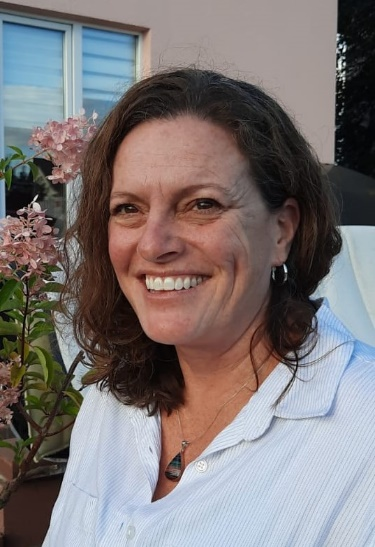

Tailoring Schools to Diverse Learners’ Needs
The " Tailoring Schools to Diverse Learners’ Needs " workshop is designed to provide teachers with the knowledge, skills, and strategies they need to create a dynamic and impactful learning environment. Through this professional development opportunity, educators will gain insights into innovative teaching methods, discover effective instructional tools, and explore ways to foster a culture of collaboration and growth within their classrooms.
Workshop Objectives:
- Understand the Scope of Student Diversity
- Implement Differentiated Instruction
- Apply Universal Design for Learning (UDL)
- Utilize Formative Assessment and Feedback
- Support Students with Special Needs
- Incorporate Social-Emotional Learning (SEL)
- Foster Collaborative Learning:
- Reflect and Apply Learning:
- Child Protection Training
- In-Depth Exploration of Student Diversity
- Hands-On Differentiated Instruction Workshop
- Universal Design for Learning (UDL) Application
- Formative Assessment Practice
- Supporting Special Needs
- Social-Emotional Learning Integration
- Collaborative Learning Design
- Reflection and Application
- Feedback and Next Steps
Keynote Speakers
April Remfrey

April is the CEO of Remfrey Educational Consulting. The organization, which has received five-star ratings form hundreds of parents for exper guidance in navigating education decisions, carries out a number of valuable initiatives:
- Facilitates PD sessions for inclusive learning environments, reaching thousands of international educators worldwide.
- Performs school audits, guiding multifaceted improvements at dozens of international schools.
April also acts as a vounteer for Senia International:
- Director of Finance & serves on the board of SENIA Europe
- Manages an annual budget of $500,000, reflecting a quadrupled growth trajectory over the past three years.
- Assists in organizing highly attended in-person conferences, drawing nearly 450 participants, as well as virtual conferences with over 2000 attendees.
- Designed groundbreaking disability-inclusive standards shaping the future of international school offerings.
Remfrey has also made a number of publications and presentations:
- SENIA International Teaching Assistant Certification
- Strategic Tracking of Educational Progress STEP - Progress monitoring tool for international schools
- Writing - International School Parent, FIGT, Tales Mag
- Speaking - International School of Kuala Lumpur, Toddle, SENIA, SPAN, FIGT
- Podcasts - Ellen Mahoney, Craig Kemp, SENIA International, International School Services
Debbie Downes
In August 2022, Debbie Downes joined The International Centre of Missing and Exploited Children as the Director of Global School Initiatives. In this role, she develops and provides child protection training, support, and resources to schools around the world. She has been supporting ICMEC’s work as a regional trainer since July 2020.
Debbie has worked in international education for 18 years, first as an elementary teacher, then as school principal, and then as Accreditation and Child Protection Lead for Quality Schools International. She developed and revised handbooks, policies, and resources to support child protection efforts at a group of 36 international schools. She also supported schools with on-site and virtual professional development.
Debbie’s background in child protection includes an MSW from the University of California at Berkeley and several years of experience working in the court unit of Children and Family Services in Contra Costa County, California. Debbie’s overseas career began with 3 years as a health education volunteer with the Peace Corps in Kolda, Senegal. She has since lived with her husband, 2 children, and 2 rescue dogs in Thailand, Turkmenistan, Azerbaijan, Slovenia, Belarus, and her current location of Tbilisi, Georgia.